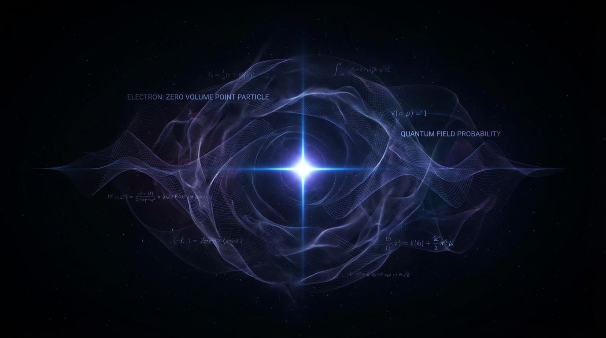

The Zero-Volume Enigma: Why Electrons Break Our Intuition

When we think of particles, our minds naturally drift to tiny billiard balls. We imagine protons and neutrons clumped together in the nucleus, taking up space, and electrons orbiting them like miniature planets. But the deeper we dive into quantum mechanics, the more our classical intuition shatters.
Perhaps the most mind-bending realization of all is this: the electron, according to our best physical models, has a volume of exactly zero.
The Illusion of Size
Everything we touch, see, and interact with is made of matter, and matter takes up space. So how can the fundamental building block of all electricity, chemistry, and structure be completely sizeless?
The answer lies in the Standard Model of particle physics. In this framework, electrons are classified as elementary particles—specifically, leptons. Unlike protons and neutrons, which are made of smaller quarks, the electron has no known internal structure. It cannot be split, and it is not made of anything else. It simply is.
When physicists try to measure the radius of an electron, they keep hitting the limits of their instruments. We have probed it down to $10^{-22}$ meters, and it still looks like a perfect, infinitely small mathematical point. As far as the equations of quantum electrodynamics (QED) are concerned, treating the electron as a true point particle—a dimensionless singularity—works flawlessly.
Probability vs. Reality
If the electron has no volume, why doesn't matter just collapse into itself? Why does a solid table feel solid?
This is where the magic of quantum mechanics steps in. While the electron itself is a point particle, its influence is not. Electrons don't exist in fixed locations; they exist as probability clouds (orbitals) described by wave functions. The "size" of an atom isn't dictated by the physical size of the electron, but by the vast, blurry region where the electron is likely to be found.
Furthermore, the Pauli Exclusion Principle states that no two fermions (like electrons) can occupy the exact same quantum state at the same time. This principle acts as the ultimate cosmic boundary. It forces the zero-volume probability clouds to stack up and push against each other, giving rise to the sheer volume and structure of the macroscopic world.
The Mathematical Crisis
The idea of a zero-volume particle isn't without its headaches. If a particle has mass and charge but zero volume, its density and electric field strength at the exact center become infinite. Infinity is usually a sign that our math is breaking down.
To deal with this, physicists developed a complex mathematical trick called renormalization to sweep these infinities under the rug, allowing QED to make the most precise predictions in the history of science. Yet, the deep, philosophical discomfort remains. Is the electron truly sizeless, or are we just waiting for String Theory—which suggests particles are 1D vibrating strings, not 0D points—to finally give it some shape?
For now, the zero-volume electron stands as a beautiful testament to the weirdness of our universe. The very thing that holds our physical world apart, ensuring we don't fall through the floor, takes up no space at all.